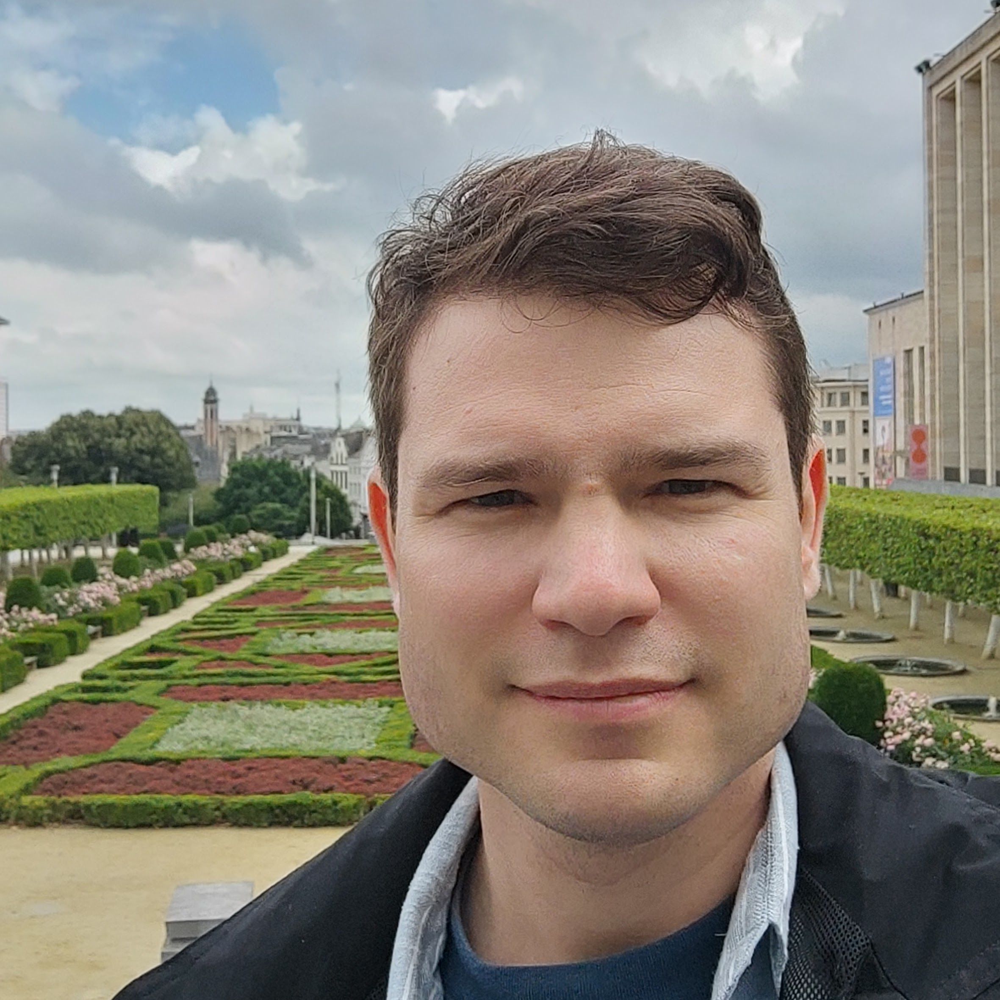

Email: bernshteyn ~at~ math.ucla.edu
Welcome!
I am an Assistant Professor in the Department of Mathematics at UCLA.
You can find my CV here (last update: Sep 7, 2024). Here's my Math Genealogy entry.
Research
My main areas of research are descriptive set theory and combinatorics, with an emphasis on their interactions and on connections to other fields such as computer science and dynamical systems.
Papers and Preprints
- With József Balogh, Michelle Delcourt, Asaf Ferber, and Huy Tuan Pham. Sunflowers in set systems with small VC-dimension. Preprint (submitted).
- With Hemanshu Kaul, Jeffrey A. Mudrock, and Gunjan Sharma. On strongly and robustly critical graphs. Preprint (submitted).
- With Jing Yu. Embedding Borel graphs into grids of asymptotically optimal dimension. Preprint (submitted).
- With Abhishek Dhawan. A linear-time algorithm for (1+ε)Δ-edge-coloring. Preprint (submitted).
- With Eugene Lee and Evelyne Smith-Roberge. Weak degeneracy of planar graphs. Preprint (submitted).
- With Felix Weilacher. Borel versions of the Local Lemma and LOCAL algorithms for graphs of finite asymptotic separation index. Preprint (submitted).
- With Daniel Dominik, Hemanshu Kaul, and Jeffrey A. Mudrock. DP-coloring of graphs from random covers. Preprint (submitted).
- With Abhishek Dhawan. Fast algorithms for Vizing's theorem on bounded degree graphs. Preprint (submitted).
- With Jing Yu. Large-scale geometry of Borel graphs of polynomial growth. Preprint (submitted).
- With James Anderson and Abhishek Dhawan. Coloring graphs with forbidden almost bipartite subgraphs. Preprint (submitted).
- With James Anderson. Borel line graphs. Journal of Symbolic Logic (to appear).
- With Abhishek Dhawan. Borel Vizing's theorem for graphs of subexponential growth. Proceedings of the American Mathematical Society (to appear).
- Distributed algorithms, the Lovász Local Lemma, and descriptive combinatorics. Inventiones Mathematicae (2023).
- With Eugene Lee. Weak degeneracy of graphs. Journal of Graph Theory (2023). [See this paper for a correct proof of Theorem 1.4]
- Equivariant maps to subshifts whose points have small stabilizers. Journal of Modern Dynamics (2023).
- With Tyler Brazelton, Ruijia Cao, and Akum Kang. Counting colorings of triangle-free graphs. Journal of Combinatorial Theory, Series B (2023).
- Probabilistic constructions in continuous combinatorics and a bridge to distributed algorithms. Advances in Mathematics (2023).
- With James Anderson and Abhishek Dhawan. Coloring graphs with forbidden bipartite subgraphs. Combinatorics, Probability and Computing (2023).
- Descriptive combinatorics and distributed algorithms. Notices of the American Mathematical Society, Feature Article (2022)
- Borel fractional colorings of Schreier graphs. Annales Henri Lebesgue (2022).
- With Eugene Lee. Searching for an intruder on graphs and their subdivisions. Electronic Journal of Combinatorics (2022).
- With Michelle Delcourt and Anush Tserunyan. Independent sets in algebraic hypergraphs. Journal of the European Mathematical Society (2022).
- Local coloring problems on smooth graphs. Fundamenta Mathematicae (2022).
- A fast distributed algorithm for (Δ+1)-edge-coloring. Journal of Combinatorial Theory, Series B (2022).
- With Clinton T. Conley. Equitable colorings of Borel graphs. Forum of Mathemarics, Pi (2021).
- On Baire measurable colorings of group actions. Ergodic Theory and Dynamical systems (2021).
- A short proof of Bernoulli disjointness via the Local Lemma. Proceedings of the American Mathematical Society (2020).
- Ergodic theorems for the shift action and pointwise versions of the Abért–Weiss theorem. Israel Journal of Mathematics (2020).
- With Omid Khormali, Ryan R. Martin, Jonathan Rollin, Danny Rorabaugh, Songling Shan, and Andrew J. Uzzell. Regular colorings in regular graphs. Discussiones Mathematicae Graph Theory (2020).
- With Alexandr Kostochka and Xuding Zhu. Fractional DP-colorings of sparse graphs. Journal of Graph Theory (2020).
- Multiplication of weak equivalence classes may be discontinuous. Transactions of the American Mathematical Society (2019).
- Building large free subshifts using the Local Lemma. Groups, Geometry, and Dynamics (2019).
- With Alexandr Kostochka. DP-colorings of hypergraphs. European Journal of Combinatorics (2019).
- With Michael Tait. Improved lower bound for difference bases. Journal of Number Theory (2019).
- Measurable versions of the Lovász Local Lemma and measurable graph colorings. Advances in Mathematics (2019).
- The Johansson–Molloy Theorem for DP-coloring. Random Structures and Algorithms (2019).
- With Michelle Delcourt, Henry Towsner, and Anush Tserunyan. A short nonalgorithmic proof of the containers theorem for hypergraphs. Proceedings of the American Mathematical Society (2019).
- With Alexandr Kostochka. On differences between DP-coloring and list coloring (in Russian). Matematicheskie Trudy (2018); English version.
- With Alexandr Kostochka. Sharp Dirac's theorem for DP-critical graphs. Journal of Graph Theory (2018).
- With Alexandr Kostochka and Xuding Zhu. DP-colorings of graphs with high chromatic number. European Journal of Combinatorics (2017).
- The Local Cut Lemma. European Journal of Combinatorics (2017).
- With Alexandr Kostochka and Sergei Pron. On DP-coloring of graphs and multigraphs (in Russian). Siberian Mathematical Journal (2017); English version.
- The asymptotic behavior of the correspondence chromatic number. Discrete Mathematics (2016).
- New bounds for the acyclic chromatic index. Discrete Mathematics (2016).
- With Alexandr Kostochka. On the number of edges in a graph with no (k+1)-connected subgraphs. Discrete Mathematics (2016).
- 3-Regular subgraphs and (3,1)-colorings of 4-regular pseudographs (in Russian). Discrete Analysis and Operations Research (2014).
- With Nikolay V. Shilov. Robots in Space Multi-agent Problem: complexity, information and cryptographic aspects (in Russian). Modeling and Analysis of Information Systems (2013).
Other Writing
Mentoring
Currently advised students
Currently supervised postdocs
Past advised students
- Aaditya Raghavan, B.Sc., 2022
- Eugene Lee, B.Sc./M.Sc., 2022
- Abhishek Dhawan (co-advised with Cheng Mao), Ph.D., 2024
- First position: University of Illinois at Urbana–Champaign (postdoc).
- Jing Yu, Ph.D., 2024
- First position: Shanghai Center for Mathematical Sciences, Fudan University (postdoc).
REUs, GRAs, etc.
- Cameron Chang, Horace Fusco, Sarah Peterson, Faren Roth, and Henry Simmons, Georgia Tech REU, Summer 2022
- Manuel Fernandez, GRA, Spring–Summer 2022
- Tyler Brazelton, Ruijia Cao, and Akum Kang, undergraduate research project, Summer 2021
Teaching
Current Teaching
Summer break!
Highlights of Past Teaching
At Georgia Tech:
- 2024, Spring Probabilistic Combinatorics (MATH 7018) and Set Theory (MATH 8803).
- 2023, Fall Applied Combinatorics (MATH 3012).
- 2023, Spring Probabilistic Combinatorics (MATH 7018).
- 2022, Fall Applied Combinatorics (MATH 3012) and Introduction to Graph Theory (MATH 4022).
- 2022, Spring Probabilistic Combinatorics (MATH 7018).
- 2021, Fall Descriptive Combinatorics (MATH 8803).
- 2021, Summer Undergraduate Research (MATH-2699 and MATH-4699).
- 2021, Spring Combinatorial Analysis (MATH 4032).
- 2020, Fall Introduction to Graph Theory (MATH 4022).
At CMU:
- 2019, Fall Combinatorics (21-301) and Algebraic Structures (21-373).
- 2019, Summer Research Topics in Combinatorics (21-499).
- 2019, Spring Set Theory (21-329).
- 2018, Fall Linear Algebra (21-341).
At UIUC:
- 2017, Fall A Mathematical World (MATH 181), Primary Instructor.
- 2015, Spring Applied Linear Algebra (MATH 415), TA.
- 2014, Fall Applied Linear Algebra (MATH 415), TA.
|